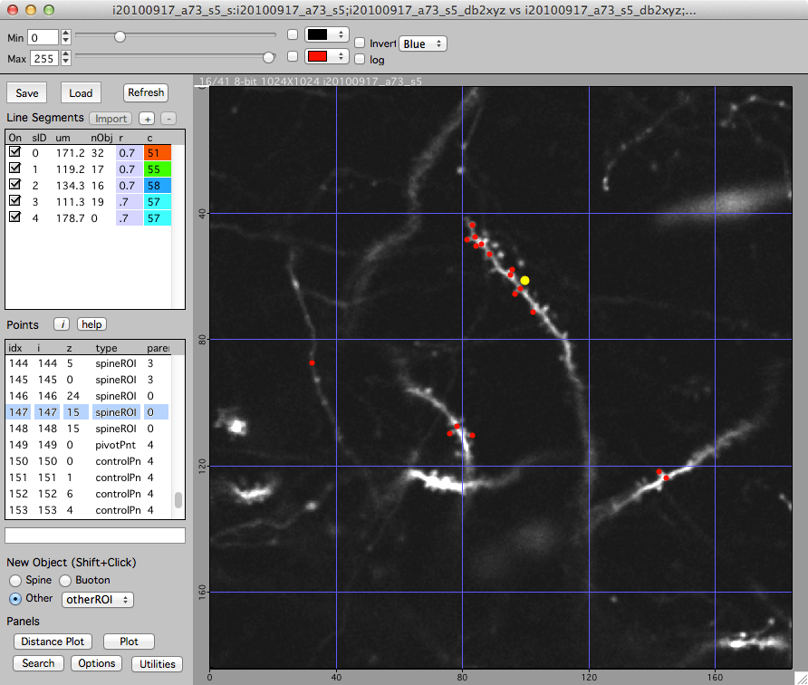

Annotating a stack
This describes a workflow for annotating 3D points in a single stack. Please see making a map to collect a sequence of stacks into a timeseries map.
1. Open and initialize Map Manager
- Open Map Manager in Igor Pro (double-click the Map Manager.ipf file).
- Click in the Igor Pro command window to compile (the command window is titled ‘Untitled’).
- Open the Stack Browser window by selecting the main menu ‘MapManager - Stack Browser’.
2. Load a stack
- Either
Load a directory of .tif files using the ‘Load Generic Directory’ button. - Or
Drag and drop a single .tif stack onto the Igor Pro program icon.
3. Display a stack
Once a stack is loaded in the Stack Browser, double-click on its name in the list to display the stack in a Stack window.
4. Add 3D annotations
Each stack can have a list of 3D annotations, we call this a stack database (stack db).
- In a stack window, open the stack db toolbar with keyboard ‘[’.
- Add a new 3D point with shift+click.
- Delete a point by selecting the point (mouse left-click) and hitting keyboard ‘Delete’ or ‘Backspace’.
- Each point can have a textual note, select the point and fill in a note in the field below the list of points.
5. Save your work
- Save a stack db using the ‘Save’ button.
- Load a previously saved stack db with the ‘Load’ button.
- Important: You are responsible for saving your stack db. Use the ‘Save’ button.
Stack scale
Please set the proper X/Y/Z scale before making any stack db points. Set the X/Y/Z stack scale in the main stack window with keyboard ‘shift+p’.
Once 3D points are created, the scale can not be changed.
You need to set the proper X/Y/Z stack scale, in um, with keyboard 'shift+p'. This is a critical step in Map Manager as many measurements are made using um. Once stack db points are reated the scale can not be changed.
Creating 3D objects
Choose the type of object in the ‘New Object’ group and shift+click in the image to create the object. All objects are 3D points, the z value of an object will be the currently viewed image plane when the object is create. Different object types can be independently searched, plotted and connect together in a map.
- Spine : A spine is always connected to a segment (its parent segment). Thus, to create a spine, its parent segment must first be selected..
- Bouton : This also requires a parent
- vBranch :
- soma :
- peri :
- controlPnt : Points along a segment that are used to fit a line in FIJI.
- other :
Tip. All objects are 3D points. The z position of a point is the imaging plane that is viewed when the point is created. To create a new point with better precision, zoom in the stack window with keyboard '+'. The zoom will follow the mouse pointer.

Editing 3D objects
Stack DB toolbar
The stack db toolbar displays a list of line segments and a list of points. Open and close the stack db toolbar with keyboard ‘[’.
Selecting an object
Single-click on the object. Selected object will appear as yellow circles. PRess keyboard ‘esc’ to cancel a selection.
Moving an object
Select the object (single click), right-click and select ‘Move’. Your next click will be the new 3D position of the object. You are given feedback in the bottom of the stack window. Press ‘esc’ to cancel a move.
Deleting an object
Select the object (single click), right-click and select ‘Delete’. ALternatively, select the object (single-click) and hit the ‘del’ key.
Exporting data
It is very easy to export the 3D coordinates of the points in a stack DB.
In the stack db toolbar of the main stack window, click on the list of points and then press keyboard ‘e’. This will open a text table of all points in the stack db, you can copy and paste it into your favorite analysis program. See stack report for more information.
When you save a stack db you are saving all the points in a single text file. The file can be found in a folder named ‘stackdb’ in the hard-drive folder of your original stack. See File formats for more information.
Line Segments
Line segments are fit in Fiji using a special plugin, please see Fitting segments in Fiji to install this plugin.
Existing line segments are listed in the ‘Line Segment’ group. Each line segment has a length (um), a number of objects (nObj), a radius (r), and a color (c).
Creating line segments
- Make sure ‘Edit Segments ‘ is turned on.
- Create a new (empty) line segment
Click ‘+’ button in the ‘Line Segment’ group. This will create an empty line segment. - Make a series of 3D control point objects along your dendrite/axon
- Select ‘New Object -> Other -> Control Point’
- Shift-click in the image to create a control point.
- Continue making control points along the desired line segment in the image.
- Fit the line in FIJI and import the resulting line segment back into map manager
- Right-click on the new line segment (in the top left list) and select ‘Make From Control Points - FIJI’. This will open the ‘Bob Neurite Tracer’ plugin in FIJI, fit a line to your control points and open the fitted line segment in the map manager stack window.
Important: When making control points, they need to be in order along a segment. If you double-back a control point on the segment, the line fit with dumbly follow this ordering of control points. If it all gets confusing you can just delete all your control points and start over.
Important: When making a map, you will be associating individual line segments from one session to the next. For segments that you will connect together in a map, make sure your control points are in the same general direction along each segment. If your control points go left to right in session 1, they should also go left to right in session 2.
Line segment radius
Each line segment has a fixed radius in um. Spines are connected to this radius. To change the radius, double-click the radius for a segment and enter a new number. The radius of each segment is displayed in the ‘r’ column. Setting the radius will reconnect all your spines to that new radius while preserving the spine connection point to the line. To set all the radii of a run of connected segments, right click on the segment in the list and select ‘Set run to same radius’.
Line segment pivot points
When in a map, line segments need a ‘pivot point’. Specify a pivot point for a segment by clicking a point in the segment, right-click and select the ‘Set As Segment Pivot’ menu.
The pivot point should specify a region of the segment that is the same in all sessions. A good strategy is to choose a region of the segment near an obvious spine that is present in all sessions. Another strategy is to choose a pivot point where some other segment (dendrite) crosses near your segment as these tend to remain stable across time. Try and put the pivot point near the center of the segment, do not place it at either end. The pivot point is used to calculate a line distance along the segment (in um) which in turn will be used to auto-guess connections between objects (spines) across sessions.
Search panel

Open the Search panel from the stack db toolbar using the ‘Search’ button.
The search panel will search a stack db and return a list of points. Once generated, clicking on a point in the search results will display the point in the main stack window.
Different types of searches are performed with buttons:
- All : Generate a list of all stack db points.
- Notes : Generate a list of stack db points with notes.
- Close : Search for points that have other points that are close.
Once a search is performed, the search panel will display a list of results. Each row in the list of results is a point in the stack db. Single-click on a point in the list and it will be selected in the main stack window.
If you zoom the stack window (keyboard +) you can snap to different points while maintaining the zoom using the search panel ‘Snap’ checkbox.
The search results are a static output report. Once a search is performed, if points in the main stack window are modified (add, delete, move) the search results will not be automatically updated. If the points are modified in the main stack window and you want to use the search results, regenerate the search.
Options panel

Open the Stack DB Options Panel from the stack db toolbar using the ‘Options’ button.